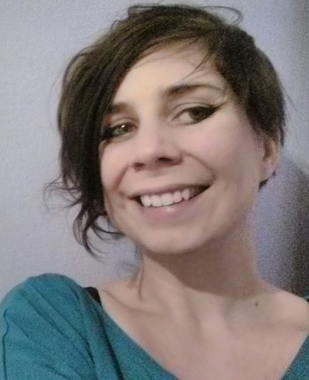

Agnieszka
Z
ydczyk

28 August 1987
Fröseke Nylund 3
36497 Fröseke
Sweden
a.zydczyk@gmail.com
+48 663 666 770
languages
English:
B2
Norwegian:
A1
Polish:
native
interests
social psychology
horrors and thrillers (books and movies)
computer games
work experience
10.2020 – now
independent Unity game designer
Unity 2020, Plastic SCM
07.2018 – 08.2020
therapy coordinator/therapist
at Authism Therapy Center, Gdansk
08.2017 – 06.2018
front-end developer
for
Rowerowy Maj campaign
SPA in Vue/Vuex/JS (ES2018), npm, webpack, CSS3, Bulma, WordPress, Git, GitHub
12.2016 – 11.2017
deputy manager
at Occupational Therapy Workshops, Radomsko
01.2016 – 11.2016
psychologist
at Occupational Therapy Workshops, Radomsko
other IT skills
C/C++ (novice)
React.js (novice)
education
2010 – 2015
Psychology (Master’s Degree)
at Jagiellonian University in Kraków
2006 – 2009
International Relations
at Jan Kochanowski University in Kielce